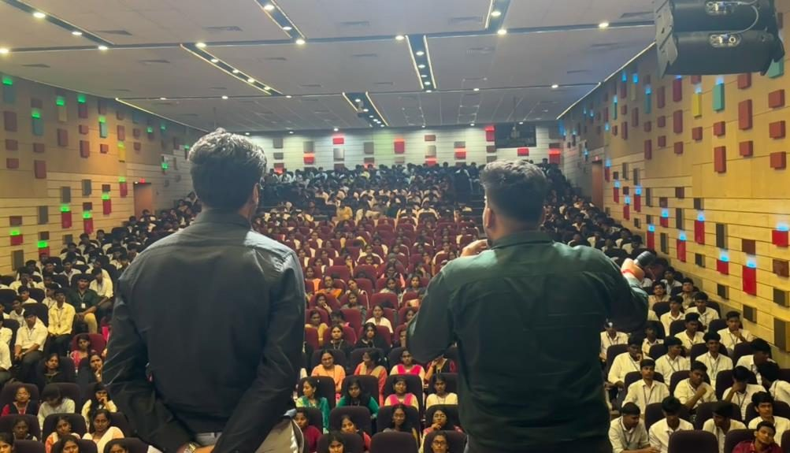
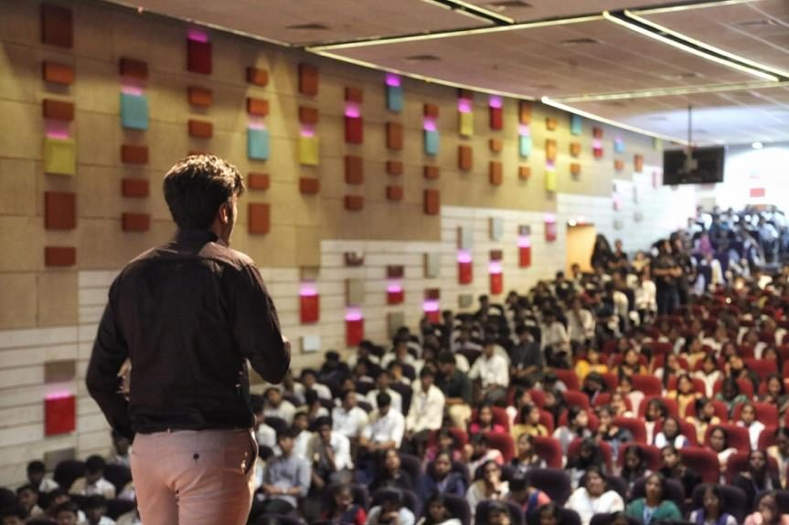
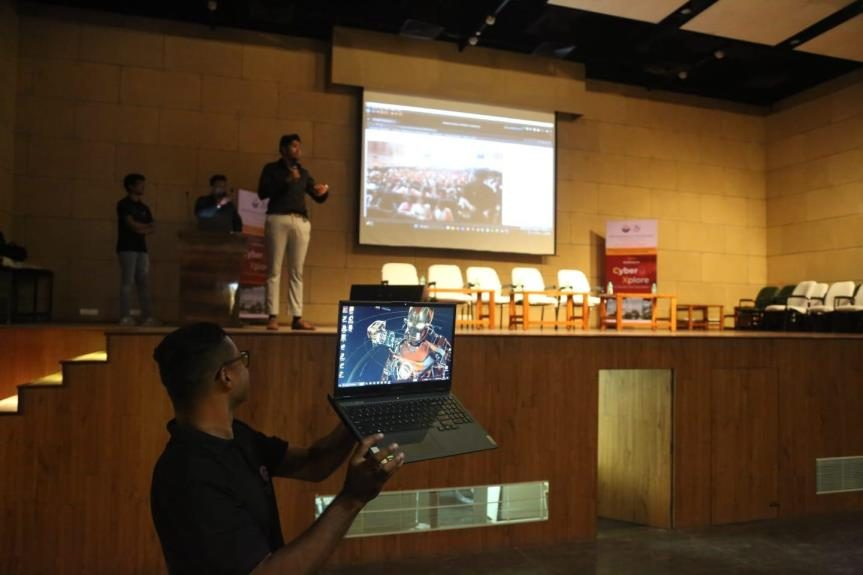
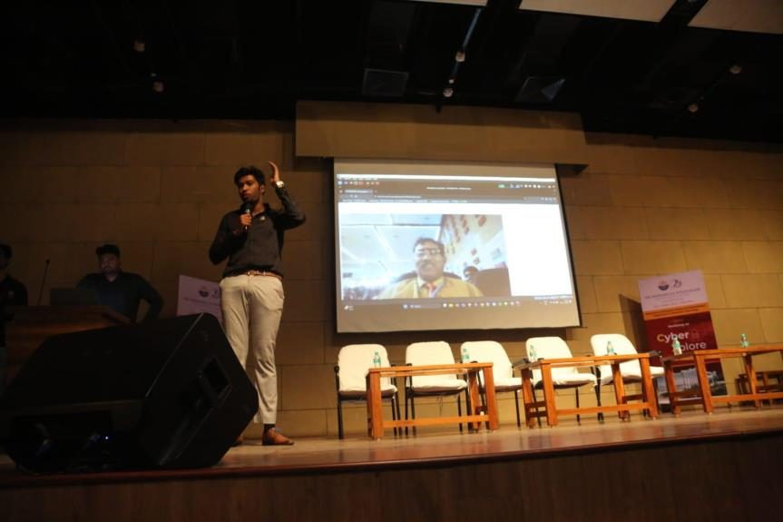
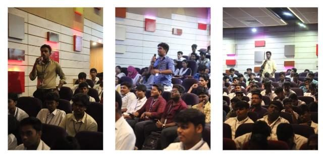
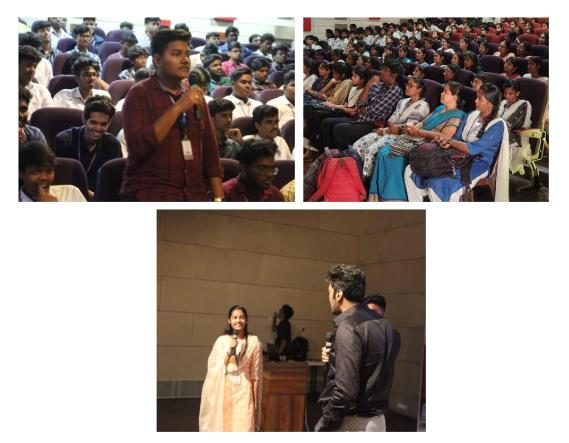
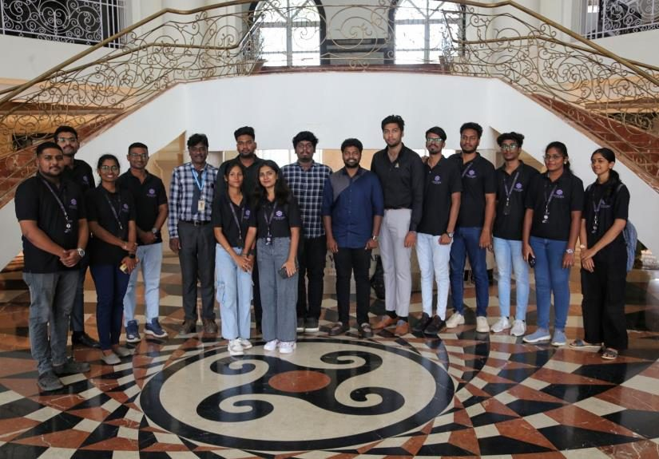

01 Objective
The Cyberxplore workshop aimed to raise awareness of critical cybersecurity issues and equip engineering students with practical knowledge to safeguard themselves against cyber threats in the digital age.
With the increasing frequency of cybercrimes and data breaches, it is essential for future professionals across all engineering disciplines to develop a solid understanding of cybersecurity fundamentals. The workshop was designed to bridge the gap between academic knowledge and real-world security challenges — providing students with both theoretical grounding and practical tools to navigate risks in modern digital environments.
02 Workshop Agenda


03 Topics Covered
04 Real-World Case Studies
One of the highlights of the workshop was the discussion of real-world cybersecurity incidents that made global headlines — connecting theoretical knowledge to practical implications students could relate to.
05 Practical Demonstration Session
The demonstration session provided an immersive, hands-on experience of real-world cyber threats — showing participants how attackers exploit human and technical vulnerabilities across three critical areas.
A volunteer was selected from the audience for a real-time, conversation-based demonstration. Through a seemingly casual conversation, the participant was guided into revealing personal and professional details without realising the implications — illustrating how attackers use charm, rapport-building, and subtle questioning to extract confidential information.
- Showed how social engineering bypasses even strong technical defences by exploiting human psychology
- Reinforced the need to avoid sharing information without verifying identity or intent
- Highlighted the importance of security training to help staff spot social engineering attempts
Using a self-built spoofing platform, header information was manipulated to make a fraudulent email appear to come from a trusted sender. A phishing page resembling a well-known service's login screen was created using Zphisher, demonstrating how legitimate-looking URLs disguise malicious destinations. A location-tracking tool, Hound, showed how clicking a malicious link can expose a user's geographic location.
- Taught participants to verify sender addresses and inspect links before clicking
- Showed how link masking hides malicious intent behind trusted-looking URLs
- Raised awareness that phishing can track location, not just steal credentials
With prior consent, a volunteer's laptop was used to demonstrate the full lifecycle of a malware attack using the Metasploit Framework and Hoxshell — tools commonly used by cybersecurity professionals for penetration testing. The demonstration covered gaining unauthorized backdoor access, taking control of system resources including the camera and screen, and locating sensitive files on the compromised device.
- Showed the full process from infection to complete system compromise
- Demonstrated privacy risks posed by hidden malware in seemingly benign software
- Reinforced the importance of software updates, antivirus tools, and safe browsing habits


06 Challenges & Mitigations
While the demonstration session was a success, a few challenges were encountered and addressed:
- Technical Setup — tools including Metasploit, Hoxshell, and Zphisher required significant pre-testing to ensure compatibility with the presentation environment and avoid technical glitches.
- Audience Engagement — given the technical nature of the content, interactive Q&A sessions and relatable real-life examples were used to bridge the gap between complex concepts and everyday situations.
07 Student Engagement & Feedback
The workshop witnessed an exceptional level of engagement from beginning to end. The mobile-based ice-breaking activity set an immersive tone early, helping students feel comfortable sharing thoughts and asking questions throughout the session.
During Q&A segments, students asked insightful questions spanning both the technical mechanics of phishing and malware defences, and broader concerns about the future of cybersecurity in an increasingly digital world. To further encourage participation, electronic gadgets were awarded to the most engaged students — creating a lively, competitive atmosphere that drove deeper involvement.


08 Outcomes & Impact
09 Conclusion
The Cyberxplore workshop, organised by Starfort, was a great success — providing 500 engineering students at Sri Manakula Vinayagar Engineering College with valuable knowledge and skills in cybersecurity. The interactive format, combined with real-world case studies and live attack demonstrations, made it a highly engaging and educational experience.
Sri Manakula Vinayagar Engineering College expressed heartfelt appreciation for the session, and both the faculty and students were impressed with the depth of expertise delivered. The workshop demonstrated that cybersecurity awareness is relevant to every engineering discipline — not just specialised technical fields — and several students expressed renewed interest in pursuing cybersecurity further.
